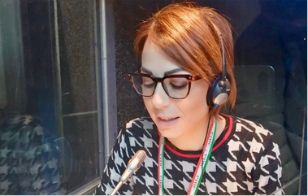

"Abbatti le barriere linguistiche e arriva al punto"
Cristina Mozzillo - Traduttrice, interprete e formatrice
Chi sono
Da sempre appassionata alle lingue straniere, curiosa di capire gli altri e conoscerne usi e costumi, ho iniziato fin da piccola a studiare le lingue e viaggiare all'estero.
La mia passione per le lingue mi ha portato a laurearmi con lode in traduzione e interpretazione a Trieste nel 2006. Ho lavorato con clienti importanti come consolati, uffici federali svizzeri, istituti universitari e grandi aziende subito dopo la laurea, consolidando le mie competenze e guadagnando preziose esperienze sul campo.
Oggi, con oltre 15 anni di esperienza, aiuto istituzioni, aziende e liberi professionisti a superare le barriere linguistiche e culturali per raggiungere i loro obiettivi.
clicca qui per consultare il mio CV
Cosa posso fare per te e come lo faccio
Posso tradurre i documenti necessari per trattative, pratiche, collaudi o nuove vite all'estero. Inoltre, posso accompagnarti come interprete per comunicare con clienti stranieri o partecipare ad eventi e cerimonie.
Posso insegnare lingue straniere personalizzando il corso per certificazioni o trasferimenti all'estero. Posso anche tradurre i tuoi testi usando software professionali e accompagnarti durante visite o eventi importanti. Adatto i miei corsi alle tue esigenze.
Servizi
Traduzioni giurate Traduzioni nei settori legale e notarile Traduzioni tecniche per studi di architettura, ingegneria, agenzie di pratiche nautiche Traduzioni per il settore turistico ed enogastronimico Traduzioni per il settore industriale, commerciale e assicurativo Revisione di traduzioni Traduzioni e revisioni
Interpretariato Interprete di trattativa in occasione di formazioni tecnche in azienda trattative commerciali visite aziendali e meeting dirigenziali saloni internazionali o in ambito legale per atti di compravendita immobiliare visite in istituti penitenziari deposizioni in tribunale Interprete di simultanea, consecutiva e chuchotage in occasione di conferenze, convegni e vertici internazionali Interprete per matrimoni civili e cerimonie Interpretariato
Corsi su misura per chi vuole trasferirsi all'estero per lavoro, conseguire una certificazione linguistica o potenziare la consocenza delle lingue tedesco spagnolo italiano I miei corsi sono altamente personalizzati e concepiti in base alle esigenze specifiche del cliente. Disponibili corsi individuali e in piccoli gruppi, in presenza e da remoto. Corsi e formazione
Le mie lingue di lavoro sono Tedesco, Spagnolo, Francese e Italiano. Se desideri una combinazione linguistica o un settore di competenza che non tratto personalmente, posso indirizzarti a un professionista di fiducia.
Dicono di me
Alessandra / vivere a colori
"Il valore del contributo di Cristina al nostro progetto di analisi dei dati scientifici è stato inestimabile."
See ProfileMegan / Gruppo Amici
"Il lavoro di Cristina ci ha consentito di concentrarci su aree prioritarie che richiedevano la nostra attenzione."
See ProfileDonatella / StudioVersace
"Cristina ci ha fornito informazioni concrete e importanti per la nostra attività."
See ProfilePerchè affidarsi a me
Ascolto le tue esigenze, ho un approccio empatico che mi permette di capire chi ho di fronte e mi prendo cura di ogni progetto con grande accuratezza, puntualità e riservatezza. Grazie all'esperienza maturata negli anni, riesco a gestire ritmi stressanti e a soddisfare aspettative elevate. Fammi sapere come posso semplificare il tuo lavoro o la tua vita quotidiana!
Dove trovarmi!
Scrivimi tramite e-mail o whatsapp!
+ 39 339 62 38 762
cristina.mozzillo@gmail.com
Socia AITI tessera n. 222016